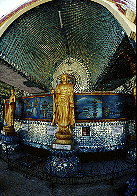

カーバーエーパゴダ/ヤンゴン
KabaAyePagoda/YANGON
「カーバーエー」とは世界平和の意。日本語で言えば「世界平和寺」。このネーミング、怪しいねえ。

1952年、時の首相ヌ−・ウ−によって建てられたパゴダ。御覧のように色使いがファンシー。


内部。中央の丸柱に沿って東西南北に4体の仏像が並ぶ。これはミャンマーのパゴダの基本スタイル。壁は鏡のモザイク。これも決して珍しいものではない事に段々気が付いてくる。

中央の柱の内部はいわゆる御本尊。ミラーボール状のシャンデリア、電飾の光背、金ピカの仏像、全てにおいてラグジュアリーである。

外側には世界各地の有名な仏像のレプリカが並ぶ。これは日本のもの。ただしどこの仏像かは不明。
珍寺大道場 HOME